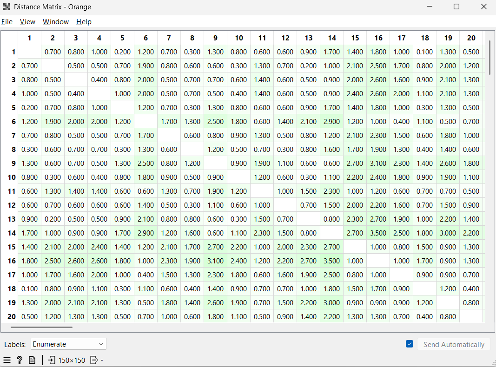
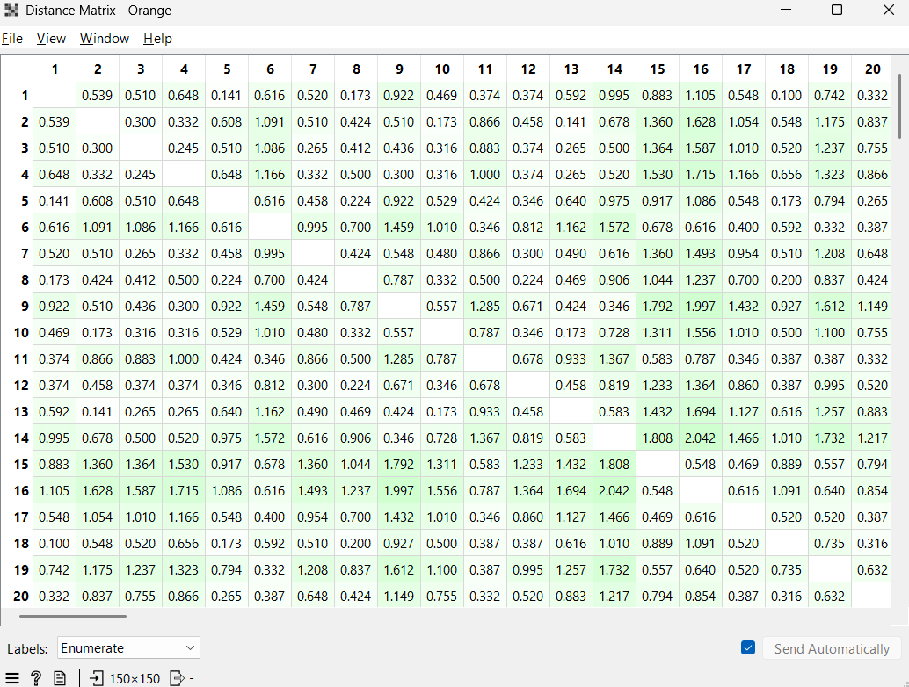

Mengukur Jarak#
Similarity vs Dissimilarity#
Dalam data mining, kita perlu mengukur kedekatan antar objek data:
Similarity (Kemiripan): Ukuran numerik yang menunjukkan seberapa serupa dua objek. Semakin tinggi nilainya, semakin mirip objek tersebut (Range \([0,1]\)).
Dissimilarity (Ketidakmiripan): Ukuran numerik yang menunjukkan perbedaan antar objek. Semakin rendah nilainya, semakin mirip objek tersebut (Minimum \(0\)).
Pengukuran Jarak Berdasarkan Tipe Atribut#
Atribut Numerik (Minkowski Distance)#
Formula umum untuk menghitung jarak pada data numerik:
Beberapa kasus khusus dari Minkowski Distance adalah sebagai berikut.
Dataset contoh (dua data pertama Iris):
\(x_1 = (5.1, 3.5, 1.4, 0.2)\)
\(x_2 = (4.9, 3.0, 1.4, 0.2)\)
1. Manhattan Distance (\(h=1\))#
Rumus:
Perhitungan:
Dissimilarity Matrix (Manhattan)#
Karena hanya ada dua objek, maka matriks ketidakmiripan berbentuk:

Penjelasan:
Elemen diagonal bernilai 0 karena jarak suatu objek dengan dirinya sendiri adalah 0.
Matriks bersifat simetris (\(d(i,j) = d(j,i)\)).
Nilai 0.7 menunjukkan tingkat ketidakmiripan antara \(x_1\) dan \(x_2\) berdasarkan Manhattan Distance.
2. Euclidean Distance (\(h=2\))#
Rumus:
Perhitungan:
Dissimilarity Matrix (Euclidean)#

Penjelasan:
Matriks tetap simetris dan diagonal bernilai nol.
Nilai 0.538 lebih kecil dibanding Manhattan karena metode Euclidean menggunakan akar kuadrat dari jumlah kuadrat selisih.
Euclidean Distance sering digunakan dalam clustering seperti K-Means.
3. Minkowski Distance (\(h=3\))#
Rumus:
Perhitungan:
Dissimilarity Matrix (Minkowski, \(h=3\))#
Penjelasan:
Nilai jarak bergantung pada parameter \(h\).
Semakin besar \(h\), jarak akan semakin dipengaruhi oleh selisih terbesar antar atribut.
Matriks tetap simetris dan digunakan sebagai input dalam algoritma clustering berbasis jarak.
4. Supremum Distance (\(h \to \infty\))#
Rumus:
Perhitungan:
Dissimilarity Matrix (Supremum)#
Penjelasan:
Supremum Distance hanya mempertimbangkan selisih terbesar antar atribut.
Matriks tetap simetris dengan diagonal bernilai nol.
Cocok digunakan ketika fokus analisis hanya pada perbedaan maksimum antar fitur.
Atribut Biner (Binary)#
Untuk variabel biner tidak simetris (asymmetric binary), kita menggunakan Jaccard Coefficient: $\(Sim_{Jaccard} = \frac{q}{q + r + s}\)$ Di mana:
\(q\): jumlah atribut yang keduanya bernilai 1.
\(r\): jumlah atribut objek \(i\) bernilai 1, objek \(j\) bernilai 0.
\(s\): jumlah atribut objek \(i\) bernilai 0, objek \(j\) bernilai 1.
Cosine Similarity#
Sering digunakan untuk membandingkan kemiripan antar dokumen (vektor frekuensi kata): $\(\cos(d_1, d_2) = \frac{d_1 \cdot d_2}{||d_1|| ||d_2||}\)$
Atribut Nominal#
Atribut nominal adalah tipe data kategori yang tidak memiliki urutan atau tingkatan (contoh: warna, jenis transportasi, atau jenis kelamin). Untuk mengukur tingkat ketidakmiripan (dissimilarity) pada atribut ini, kita menggunakan metode Simple Matching.
Formula Dissimilarity Nominal:
Di mana:
\(p\): Total jumlah variabel (atribut) nominal yang dibandingkan.
\(m\): Jumlah atribut yang memiliki nilai yang sama (matching) antara objek \(i\) dan objek \(j\).
Contoh Perhitungan:
Misalkan kita membandingkan dua objek berdasarkan satu atribut nominal yaitu MTRANS (Mode Transportasi):
Objek 1:
Public_TransportationObjek 2:
Walking
Karena nilai atributnya berbeda, maka:
\(p = 1\) (Total atribut)
\(m = 0\) (Tidak ada yang sama)
\(d(1, 2) = \frac{1 - 0}{1} = \mathbf{1}\) (Artinya objek tersebut berbeda total)
Jika Objek 1 dan Objek 2 sama-sama menggunakan Walking, maka:
\(m = 1\)
\(d(1, 2) = \frac{1 - 1}{1} = \mathbf{0}\) (Artinya objek tersebut identik/sama)
Analisis: Metode ini sangat sederhana: jika nilai atributnya sama maka jaraknya 0, dan jika berbeda maka jaraknya 1. Dalam kasus atribut campuran, hasil \(d(i,j)\) dari atribut nominal ini akan digabungkan dengan bobot fitur lainnya.
Atribut Ordinal#
Atribut ordinal mirip dengan atribut nominal, namun memiliki urutan (ranking) yang bermakna (contoh: Kecil, Sedang, Besar).
Langkah Mengukur Jarak Ordinal:
Mengganti nilai \(f\) dengan urutannya (ranking): \(r_{if} \in \{1, \dots, M_f\}\).
Melakukan normalisasi agar rentang nilai berada di \([0, 1]\) menggunakan formula: $\(z_{if} = \frac{r_{if} - 1}{M_f - 1}\)$
Hitung jarak menggunakan Euclidean Distance atau metrik numerik lainnya pada nilai \(z_{if}\) tersebut.
Atribut Campuran (Mixed Types)#
Dalam database nyata, seringkali kita menemukan berbagai tipe data sekaligus (Nominal, Biner, Numerik, Ordinal). Untuk menghitung jarak antar objek dengan atribut campuran, kita menggunakan pembobotan:
Jika \(f\) biner/nominal: \(d_{ij}^{(f)} = 0\) jika \(x_{if} = x_{jf}\), selain itu \(d_{ij}^{(f)} = 1\).
Jika \(f\) numerik: Gunakan jarak yang dinormalisasi.
Jika \(f\) ordinal: Gunakan rangking yang telah dinormalisasi (\(z_{if}\)).
Cosine Similarity#
Metode ini sangat populer dalam pengolahan teks (Text Mining). Dokumen dinyatakan sebagai vektor berdasarkan kemunculan kata-kata (term-frequency).
Formula Cosine Similarity:
Di mana:
\(d_1 \cdot d_2\): Perkalian titik (dot product) dari dua vektor.
\(\|d\|\): Panjang atau norma dari vektor.
Karakteristik:
Jika sudut antar vektor 0°, maka \(\cos(0) = 1\) (sangat mirip).
Jika sudut antar vektor 90°, maka \(\cos(90) = 0\) (tidak ada kemiripan).
Implementasi Perhitungan Jarak dengan Python#
Gunakan kode berikut untuk menghitung jarak antar baris pada dataset IRIS:
Objek 1: [np.float64(5.1) np.float64(3.5) np.float64(1.4) np.float64(0.2)]
Objek 2: [np.float64(4.9) np.float64(3.0) np.float64(1.4) np.float64(0.2)]
-----------------------------------
Jarak Euclidean (h=2) : 0.5385
Jarak Manhattan (h=1) : 0.7000
Jarak Minkowski (h=3) : 0.5104